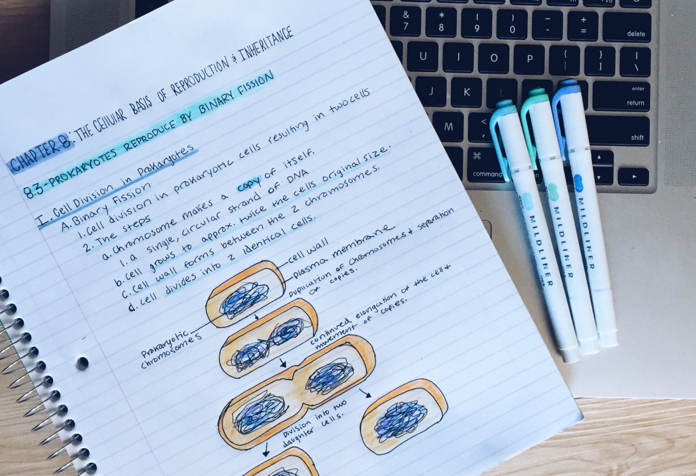
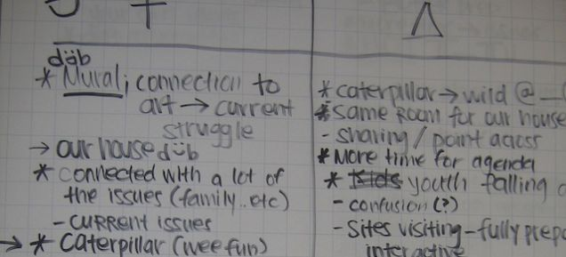
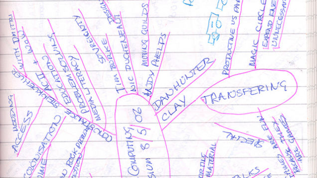

Note Taking Techniques For Effective Learning

While we might associate note-taking with school, it's something most of us continue doing for the bulk of our lives. If your techniques are feeling a bit crowded recently, it's time to get back to the basics and reboot your notes. Here are a few of the best practices.
Taking notes serves one simple purpose: to help you remember information. That's really it, but with so many different methods of note-taking out there it's good to find what works for you on different projects. So, if you're a little lost for a place to start or you just want to reboot your technique, it might be time to get back to the basics to find a system that works for you.
1. Take Solid Notes by Keeping Them Simple

Organization is key with notes, and the more organized you are the better the chances you'll actually remember that information. The basic idea of notes is to keep them short, but have enough triggers in the keywords to jumpstart your memory when you look at them again:
Stick to keywords and very short sentences.
Write out your notes in your own words (not verbatim from a teacher or colleague). One exception to this is when you hear a good turn of phrase that helps you remember the the note, or if you're writing out a direct quote.
Adjust the note-taking style to fit both your needs and the speakers.
Really, you only want to write down what matters. Notes are tricky, because you want to keep things simple, and get down only the amount of information needed to help you recall it later. If you're not already using one, a text expander can also make the process of typing out notes a lot quicker by letting you instantly type our forms, bibliography info, and more.
2. Find a Note Taking System that Works for You

You have a lot of options for different note-taking methods, but none of them are perfect for everyone. Depending on the circumstance and the type of person you are, you'll have better luck with certain methods. So, it's best to try a few.
One summary of studies from the WAC Journal points out that structuring notes in a hierarchy (much like an outline) is the most beneficial to students. Since notes in a hierarchy are basically just an outline, you can use pretty much any piece of writing software out there to keep it all organized. This style keeps things organized, but it's not always useful in the real world where teachers and colleagues jump around on the topics they're covering.